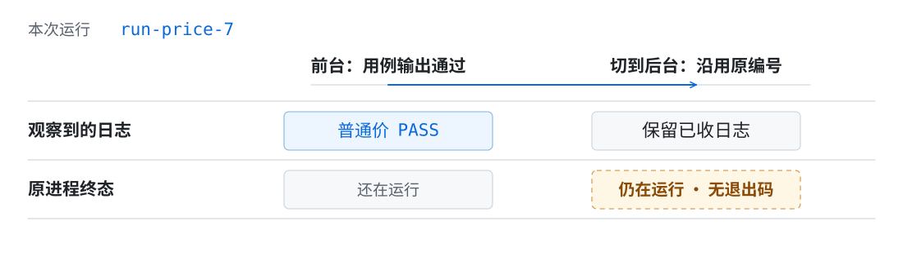
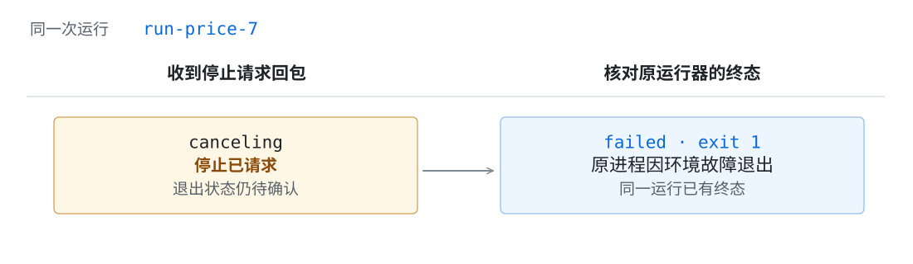

后台测试怎样等到结果？
用户说“先停一下”。同一趟后台测试 run-price-7，先后回来了两条消息。
KillShell({"id":"run-price-7"})
已向 run-price-7 请求终止;执行器退出后才确认 canceled。
BashOutput({"id":"run-price-7"})
状态:exited
[exit 1]我会先拿原编号查 BashOutput。第一条只说若存处理了一次停止请求，第二条才让人确认原进程已经退出。至于测试验到了哪一步，要翻回这趟运行的输出。
把正在跑的测试交给后台
把时间拨回 run-price-7 还在前台的时候。普通价用例刚打印通过，命令还在跑。现在想腾出前台，我会把这趟移到后台。原进程接着测，后面就能用原编号接着查。

交接时最容易放手过早。如果前台已经回了“转入后台”，退出时却仍照前台命令的办法清理，原测试就可能被一起停掉。若存要先让原运行器允许 run-price-7 留在后台，再交出前台的取消责任。
async def detach(self, run_id: str) -> dict[str, Any]:
entry = self._runs[run_id]
receipt = await self._port(self._terminal, entry)
if receipt is not None:
await self._accept_terminal(entry, receipt)
await self._commit(entry, detached=True, detach_requested=True)
return {"id": run_id, "status": entry.record.status, "detached": True}
# 先持久保存转后台的决定，再交出前台取消责任。
await self._commit(entry, detach_requested=True)
try:
result = await self._rpc(entry, "detach")
except (OSError, ValueError, RuntimeError):
receipt = await self._port(self._terminal, entry)
if receipt is None:
raise
await self._accept_terminal(entry, receipt)
result = {"detached": True}
if result.get("detached") is not True:
raise RuntimeError("runner未确认保留许可。")
await self._commit(entry, detached=True)
return {"id": run_id, "status": entry.record.status, "detached": True}src/ruocun/tools/managed_shell.py · 第 570–590 行
detach_requested 先保存交接意图。运行器确认后，管理器才提交 detached=True。测试若在交接时已经跑完，管理器可以沿原编号收下终态。交接确认和终态都缺时，前台拿不到交接成功的答复。此时再提交一遍命令会另开一趟，先前通过的用例也会重跑。
同一个正在跑的测试在 Claude Code 里按 Ctrl+B 转到后台，随后可以用后台任务 ID 跟踪，并读取写到文件的输出。若存同样让前台先腾出来，交接回包给的是原运行编号 run-price-7，后续 BashOutput 可以按原编号继续读。两边都能用原任务的材料接着查，接下来“先停一下”也得先指明是哪趟。 Claude Code 后台命令 · 若存前台交接回包
停止请求赶上了进程退出
KillShell 收到的仍是 run-price-7。若存还没查到这趟的终态，于是写下 cancel_requested，把运行记作 canceling，再向原运行器发请求。这时进程可能正在退出，原运行器仍要回收子进程、读完输出并发布结果。首条回包到了，进程怎样结束还要再查。 KillShell 怎样返回停止请求

entry.record = replace(entry.record, cancel_requested=True)
await self._commit(entry, status="canceling", phase="canceling")
payload = {
**{name: entry.manifest[name] for name in ("version", "session_id", "run_id", "launch_id", "plan_digest")},
"action": "cancel", "control_epoch": entry.record.snapshot["control_epoch"],
"owner_identity": entry.record.snapshot["owner_identity"],
}
await self._port(write_signed, entry.directory / "cancel.json", payload, entry.capability)
try:
await self._rpc(entry, "cancel")
except (OSError, ValueError, RuntimeError) as error:
receipt = await self._port(self._terminal, entry)
if receipt is not None:
await self._accept_terminal(entry, receipt)
else:
await self._unknown(entry, error)
return {"id": run_id, "status": entry.record.status}src/ruocun/tools/managed_shell.py · 第 663–679 行
这次进程抢先因环境故障以 1 退出。原运行器收完输出，把结果记作 failed 并发布终态。控制器核对签名、运行身份和已确认的关闭状态，才收下这份回执。发送取消请求时若遇到异常，它也会先查原终态，查不到才记为 unknown。 原终态回执的核验
BashOutput 把 completed、failed 和 canceled 都显示成 exited。开头的 [exit 1] 是这趟进程的退出码。要说“取消成功”，得在同一趟的终态记录里看到 canceled。 BashOutput 的状态和输出
退出码只说明测试进程怎么结束。已经验证到哪一步，要读原输出。标准输出写着“普通价 180，通过”，标准错误写着“会员价环境准备失败”。我会这样答。“测试已退出，退出码是 1。普通价 180 已验过，会员价用例在准备环境时失败，价格还没验到。”
同名的测试又跑过。隔天只看到一份写着“正在关闭”的日志，我会去找 run-price-7 的原运行目录和会话记录。这几个字在新旧两份日志里都可能出现。若存恢复时核对会话、运行和启动身份，再确认终态回执属于那次启动。材料缺失时保留原日志和未确认的状态，控制材料也核验通过后才可接管原运行。 前章的原执行回执
两项后台检查，等哪两次执行？
另起两项后台工作，单元测试是 run-unit-4，格式检查是 run-format-2。等候时，任务编号指明是哪项工作，运行编号指明它的哪次执行。假如登记之后测试又跑了一遍，这次等待仍要看原来绑定的 run-unit-4。
两项检查各在启动时选了后台执行。下面的 _start 会先启动一趟，detach 用这次的编号办交接。工具回包交给模型的正是这个编号。
entry = await self._start(plan, signal)
run_id = entry.record.run_ref.run_id
if background:
await self.detach(run_id)
await self._confirm_background_ack(entry)
return f"后台Shell已登记，id: {run_id}。用BashOutput读取新输出，用KillShell请求停止。"src/ruocun/tools/managed_shell.py · 第 689–694 行
受管 Shell 的运行编号也可以直接交给 TaskWait。程序从当前会话找这份后台执行，把任务编号和当时的运行编号一起记进等待。手工待办没有对应的执行。找不到的编号、结束情况未确认或已中断待核实的执行，都无法登记等待。 按任务编号或 Shell 运行编号查找
两项检查都正常收尾时，any 等其中任意一项，all 等两项。把单元测试改成先失败，格式检查还在跑，all 也会提早唤醒。代码还会查看当前会话中需要处理的后台事件。回来先看唤醒原因，再分别查所等的两次执行，才能决定下一步。 登记目标及 any、all 的唤醒条件
醒了就能说等的任务都结束了吗？用例只把任务 a 登进 all，始终没交回它的终态，却让未登记的 b 先失败。此时等待已就绪。前台能先处理这条失败消息，再沿原编号查自己在等的运行。 未登记任务失败时的唤醒用例（项目回归测试）
TaskWait 登记了 all，目标是 run-unit-4 和 run-format-2。随后会话收到第三个任务 run-docs-1 的失败事件，等待醒了。这个事件能说明目标中的哪一趟已经跑完？接下来查什么？
核对判断
失败事件只确认文档任务的结果。当前会话里出现了需要处理的结果，all 就可以提前返回。继续按 最初登记的两个运行编号 分别查询。只有找到它们自己的终态，才能说哪些检查已结束。
回合让出前，先保存什么？
回到两项检查刚转入后台的时刻，结果都还没到。模型单独发出 TaskWait({"ids":["run-unit-4","run-format-2"],"mode":"all"})。工具先登记候选等待，主循环把工具结果追加到会话，调用 save()，确认保存后再提交等待。若这时已有结果需要处理，当前回合可以继续。两项仍未达到唤醒条件时，等待句柄才交给调度器，模型先停在这里。
若先让出再保存，退出后可能既少了一条工具结果，也找不回当时等的是哪两趟。没有会话保存接口，主循环会撤回候选等待。保存失败或此时收到回合取消，等待也不会成功交出。调度器等到目标就绪，或用户又排入一句话，才有机会继续。 保存工具结果并提交等待 · 调度器怎样继续
把刚才那次调用改成同批提交 Read 配置文件和 TaskWait 等两项检查。读取只给本轮补一条结果，等待却决定回合能否交出控制。若存把 Read 照常交给派发流程，给同批的 TaskWait 配回须单独调用的错误。
# TaskWait 登记的是整个回合的等待。混合调用只执行同批的其余工具。
if ctx.subagentDepth == 0 and len(calls) > 1 and any(name == "TaskWait" for _, name, _ in calls):
from ..agent.background_runtime import currentWaitControl
control = currentWaitControl()
if control is not None:
control.rollback()
if ctx.rollbackTaskWait is not None:
ctx.rollbackTaskWait()
others = [call for call in calls if call[1] != "TaskWait"]
completed = await executeToolBatch(others, registry, ctx, approve=approve, journal=journal,
authorize=authorize, authorize_batch=authorize_batch,
call_scope=call_scope, permission_mode=permission_mode) if others else BatchOutcome([], False)
by_id = {message["tool_call_id"]: message for message in completed.messages}
return BatchOutcome([by_id.get(call_id, _message(call_id, "Error: TaskWait 必须单独调用,本批未登记等待。"))
for call_id, _, _ in calls], completed.approval_incomplete, completed.shell_failures)src/ruocun/tools/tool_batch.py · 第 109–123 行
模型收到读取结果和等待错误后，可以带着原来的两个目标重新单独调用 TaskWait。上一批没有登记等待，两项后台工作各自继续。
日志里的结果怎样回到会话？
再看主例 run-price-7。终端先看到了普通价通过，模型后来才第一次用 BashOutput。双方若共用读取位置，终端一读完，模型就会跳过这条证据。若存让界面和工具各自记住读到哪里，标准输出和标准错误也各走自己的位置。
做一次长日志推演。保留原来两路输出和退出码，只在标准错误里的那行报错前后各加 14,000 个 ASCII 字符的诊断。假设模型等测试退出才第一次取输出。CoreCoder 的 bash 把标准输出、标准错误和非零退出码拼成一条回包，超过 15,000 字符就留前 6,000 和后 3,000 字符。若存的 BashOutput 对两路新增输出分别裁剪，单路超过 20,000 个 UTF-16 代码单元时留开头至多 12,000 和结尾至多 8,000。把同一份输出代进去，两边都能看到退出码，报错则正好落在省略的中段。 CoreCoder 的 bash 回包 · 若存的裁剪与读取位置
我会先看回包有没有原日志的位置。在 CoreCoder 的这条回复里，省掉的内容要靠另外保存的日志核对。若存把 [logs] 路径带进回包，可沿原目录用 Read 或 Grep 查 stderr.txt，找回“会员价环境准备失败”。若还要核对哪条断言通过，就查同一目录的 stdout.txt。裁掉的部分也计入读取位置，下次调用 BashOutput 会从上次读完的地方接着看。 回包里的日志目录
完成通知要和消费记录一起保存
保留 run-price-7 已退出的结果，只把会话中断安排在通知进入历史的前后。假设待投递事件叫 E31。若先划掉 E31 就中断，重开后会漏掉这条消息。若先存消息、还没记下 E31 就退出，恢复后又可能投一次。
重开会话时，我会查最后一次成功保存的会话记录。若存把后台结果消息和已消费的事件编号交给同一次提交，保存得到确认后才在内存里确认交付。若两者已经提交，历史里已有这条通知。明确提交失败，E31 仍待投递。提交情况暂时不明时，先保留现场，等查证后再继续。 准备后台结果消息 · 一起保存消息与消费记录
这一章带走什么
- 想确认后台测试停了，先沿原运行编号查终态。收到“正在关闭”以后，进程仍可能先因环境故障退出。至于普通价和会员价各验到了哪一步，再看这趟运行的日志。
TaskWait让回合腾出前台。回合醒来先查原因，all也可能因为一条失败通知提前返回。- 把完成通知写进会话历史时，要一起保存“这条通知已经投递”的记录。只存消息，重开可能再投一次。只存标记，历史里可能少掉这条通知。
下一章把时间拨回 run-price-7 仍在运行时。这次用户补了一句“再查一下订单预览页”。这句话什么时候会进下一次模型请求？
面经自测
用户中途要求停止耗时任务，你怎么让它停止并验证结果？
字节跳动 · 一面 · 面经原帖 · 题意转述
展开参考回答
我先用原运行的身份发停止请求，接着等执行器确认那一趟怎样结束。只拿到“已要求停止”，我会继续查，不能提前报取消成功。
价格测试刚打印普通价通过时，会员价还可能在跑。后台如果最后回了“失败退出”，我按实际结果报告，同时说明哪一项还没有得到验证。
一次工具返回了大量日志，怎样裁剪后再交给模型？
展开参考回答
我会给模型头尾预览和原日志的位置，说明中间省掉了什么范围。受管命令可以到那次运行的目录找标准输出和错误输出，再查 BashOutput 只会接着读新内容。
如果实际只拿到首尾，先查有没有附件或落盘原件。没有的话，我会说中段未知，不能拿最后一句推断中间的会员测试通过了。
从前台转后台，程序为什么没有重新跑一遍命令？
若存设计题
展开参考回答
重启后只找到旧日志，没有足够的运行身份材料，该怎样处理？
若存设计题
展开参考回答
等候两个后台任务时，任务编号和运行编号分别定位什么？
若存设计题
展开参考回答
为什么不能把 TaskWait 和 Read 混在同一批？
若存设计题
展开参考回答
后台完成通知已经进了模型消息，怎样防止下次再投一遍？
若存设计题